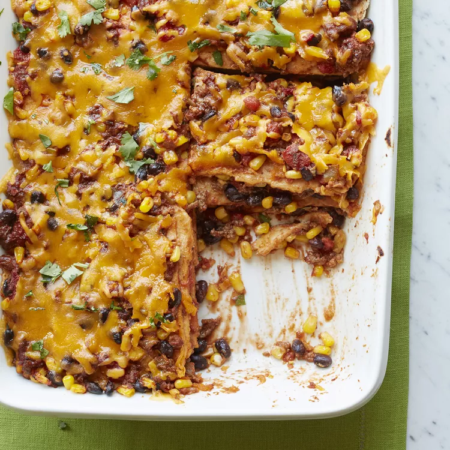

Mexican Quesadilla Casserole

Description
This recipe is super tasty and will have you feeling like you've been transported to Mexico!
Ingredients
- Cooking Spray
- 1 pound of ground beef
- 1/2 cup of chopped onion
- 1 (15 oz.) can of tomato sauce
- 1 (15 oz.) can of black beans, rinsed and drained
- 1 (14.5 oz.) can of diced tomatoes with lime juice and cilantro
- 1 (8.75 oz.) can of whole kernel sweet corn
- 1 (4.5 oz.) can of chopped green chiles, drained
- 2 teaspoons of chili powder
- 1 teaspoon of ground cumin
- 1 teaspon of minced garlic
- 1/2 teaspon dried oregano
- 1/2 teaspoon red pepper flakes
- 6 flour tortillas
- 2 cups of shredded Cheddar cheese
Steps
- Preheat oven to 350 degrees F. Prepare a 13x9-inch baking dish with cooking spray.
-
Heat a large skillet over medium-high heat. Cook and stir beef and onion in the hot skillet
for 5 to 7 minutes until beef is completely browned; drain and discard the grease.
-
Stir tomato sauce, black beans, diced tomatoes with lime juice and cilantro, corn, and chopped
green chiles into the ground beef mixture.
- Season with chili powder, cumin, garlic, oregano, and red pepper flakes.
Reduce heat to low and cook mixture at a simmer for 5 minutes.
-
Spread about 1/2 cup of the beef mixture into the bottom of the baking dish;
top with 3 tortillas, overlapping if needed.
-
Spread another 1/2 cup of the beef mixture over the tortillas.
Sprinkle 1 cup of the Cheddar cheese over the beef.
- Finish with layers of remaining tortillas, beef mixture, and Cheddar cheese, respectively.
-
Bake for 15 minutes until heated throughout and cheese is melted.
Cool for 5 minutes before serving.